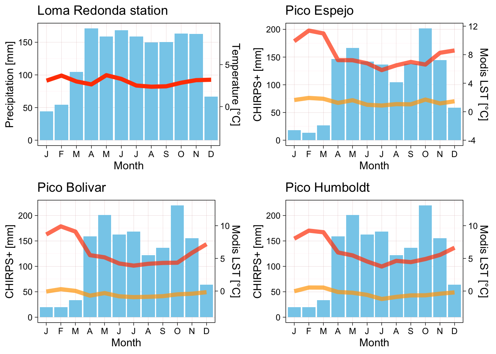
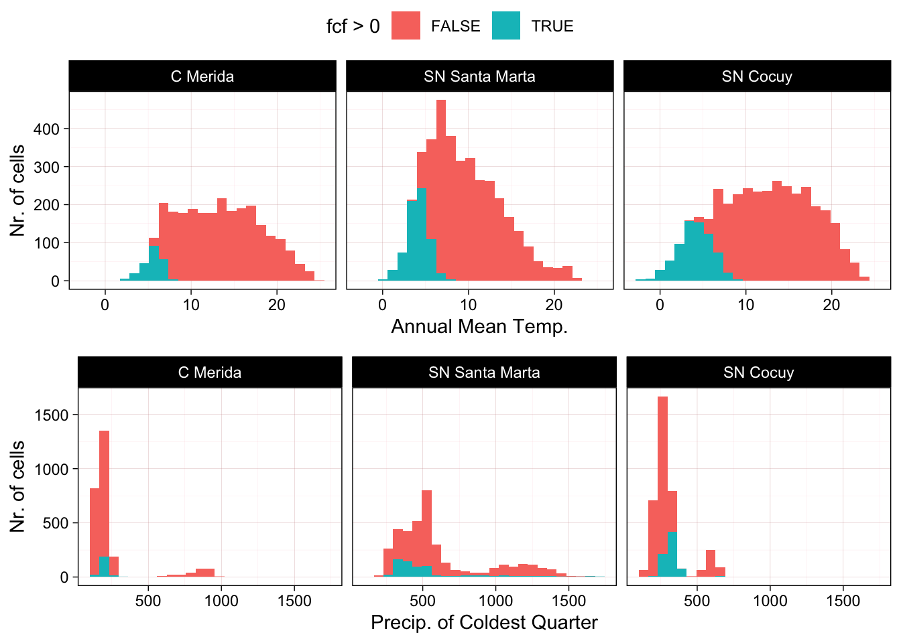
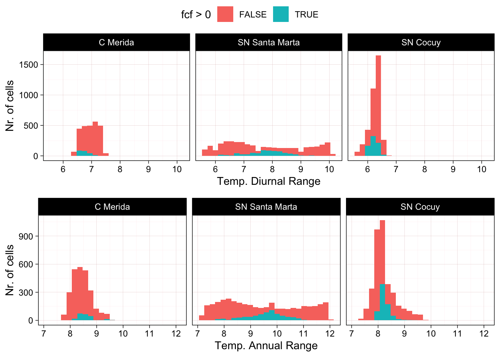

4 Abiotic environment
The Tropical glacier ecosystem of the Cordillera de Mérida belong to the inner tropics subregion according to Sagredo & Lowell (2012). Glaciers in this region are exposed to annual and diurnal variation in temperature, but diurnal temperature variability far exceeds yearly differences in monthly mean temperatures (less than 3°C between the coldest and the warmest month). Precipitation can occur throughout the year, but it can often be in the form of rain due to temperature fluctuations.
Current annual precipitation at the highest elevations in the Sierra Nevada de Mérida is estimated to be 1,000 to 1,200 mm with high interannual variability (Ramírez et al., 2020). The dry period extends between December and March, when the influence of the northeastern trade winds predominates (Andressen, 2007). Hence, both rainfall and snowfall concentrate during the wet season, with snow increasing in frequency with elevation above c. 4,000 m In this region the interannual mass balance variability is more likely to be controlled by year-to-year temperature variations rather than seasonal variation. Dry periods with significant reductions in precipitation are associated with El Niño–Southern Oscillation years (Andressen, 2007; Rodríguez-Morales et al., 2019).
Both precipitation and temperature decrease with elevation in the study area from 1,811 mm mean annual precipitation and 7.1°C mean temperature at La Aguada cable car station (3,446 m) to 1,173 mm and −0.4°C in the highest station where records are available in the country (4,766 m). Mean temperature decreases 0.63°C for every 100 m increase in elevation (Azócar & Fariñas, 2003). However variability between years can lead to large differences in published summaries (see Pulwarty et al., 1998).
4.1 Climatic conditions in the area of assessment
We used global datasets of interpolated climatic variables and time series of remote sensing products to compare the climatic conditions of different Tropical glacier ecosystems around the world. Methods and spatial resolution (pixel size from 500 m to 5 km) of the datasets means that estimated values are not directly comparable to field measurements and can not provide rigorous mass balance insights, but they allow to compare relative differences in the climate of each glacier site (Sagredo & Lowell, 2012).
Figure 4.1 shows climatograms based on historical data (Monasterio & Reyes, 1980) compared to climatograms estimated from time series of remote sensing data at different locations (Wan et al., 2015; Funk et al., 2015).
The four months with lowest precipitation contribute 17.4 % of the mean annual precipitation in Loma Redonda station and between 9.0 and 10.1 % in the three peaks.
The remote sensing estimates of temperature over the three peaks show large (\(> 12 °C\)) differences between min and max monthly temperatures, and low to moderate differences between months (\(< 6 °C\))
| RGIId | Diurnal range | Annual range | Isothermality |
|---|---|---|---|
| RGI60-16.01388 | 12.91290 [°C] | 6.005735 [°C] | 2.150095 [1] |
| RGI60-16.01389 | 12.32778 [°C] | 5.215612 [°C] | 2.363630 [1] |
| RGI60-16.01390 | 12.36387 [°C] | 5.405533 [°C] | 2.287262 [1] |
| RGI60-16.01391 | 12.66225 [°C] | 5.487235 [°C] | 2.307583 [1] |
4.2 Bioclimatic conditions in regional context
We characterised the 25 km spatial buffers around the glacier outlines of the Cordillera de Merida and the two nearest tropical glacier ecosystem units in the Sierra Nevada de Santa Marta and the Sierra Nevada del Cocuy (Colombia).
We extracted the mean values of 19 bioclimatic variables, snow days and frost change frequency (fcf) for the period 1979-2013 based on the CHELSA dataset (Karger et al., 2017; Karger et al., 2018 ). Small areas of these buffers (expressed as percentage of raster cells) have extreme cryogenic conditions (seasonal/permanent snow cover or frost conditions):
| Region | Nr. of cells | fcf > 0 | snow_days > 0 |
|---|---|---|---|
| C Merida | 2608 | 8.588957 [%] | 1.111963 [%] |
| SN Santa Marta | 3822 | 18.079540 [%] | 2.145474 [%] |
| SN Cocuy | 3722 | 19.451908 [%] | 8.651263 [%] |

Figure 4.2 and Figure 4.3 show the distribution of four bioclimatic variables in the three regions, highlighting how the cryogenic areas differ from the rest of the spatial buffer (blue vs. red areas in each plot), and how the distribution of values differs between the three regions. The extreme cryogenic areas of the Cordillera de Mérida are exposed to different bioclimatic conditions than the nearest glacier areas in Colombia. They are exposed to similar mean annual temperatures as the Sierra Nevada del Cocuy, but has lower annual and diurnal temperature ranges and much lower levels of precipitation in the coldest quarter.

These plots show general differences between regions but the values are interpolated over large areas are not accurate representation of microclimatic conditions, for example diurnal temperature ranges are probably underestimated and annual ranges overestimated.